Dijeron que sí
Diez ayuntamientos de Morelos mandaron actas para revertir su voto a favor de la revocación de mandato justo cuando la reforma alcanzó los 24 cabildos que pide la Constitución. Con el expediente TEEM/JDC/12/2026-2 del Tribunal Electoral, el Periódico Oficial, actas y gacetas municipales, la columna fecha cada voto: cuatro de esos municipios aprobaron en 2023 con otra administración, pero seis lo hicieron en el verano de 2026 o a inicios de octubre, con la misma administración que semanas después dijo que no. Con Jon Elster y la cuerda de Ulises, y con el artículo 32 de la Ley Orgánica Municipal, que solo permite revocar un acuerdo por ilegalidad, interés público o porque desaparecieron sus causas.
En Morelos, la revocación de mandato lleva casi cuatro años esperando su declaratoria. La LV Legislatura aprobó la reforma el 30 de noviembre de 2022 y la envió a los 36 ayuntamientos, porque el artículo 147 de la Constitución del estado exige que dos terceras partes de ellos la aprueben antes de que el Congreso haga el cómputo y la declare vigente. Dos terceras partes de 36 son 24. El 4 de noviembre de 2026, con esa cuenta presuntamente completa, el Congreso no votó la declaratoria: el presidente de la Mesa Directiva, Isaac Pimentel Mejía, expuso que "varios ayuntamientos cambiaron el sentido de su voto de positivo a negativo", según el boletín oficial del propio Congreso.
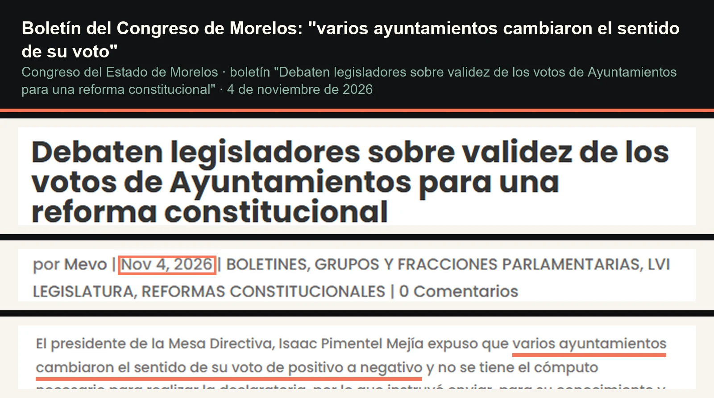
Esta columna no se ocupa de si la gobernadora Margarita González Saravia debe seguir o irse; esa decisión, si la reforma se declara, será de los votantes. Se ocupa de una pregunta más estrecha y verificable: cuándo votó cada uno de los diez ayuntamientos que hoy quieren echarse para atrás, y con qué cabildo lo hizo. La respuesta está en documentos públicos, y aquí van todos, con su página y lo relevante marcado.
Lo que pide la Constitución
El mecanismo es sencillo. El artículo 147, fracción I, establece que una reforma aprobada por dos terceras partes de los diputados "se pasará a los Ayuntamientos" y que, "si las dos terceras partes de los Ayuntamientos aprobaran la reforma o adición, una vez hecho el cómputo por el Congreso del Estado", se hará la declaratoria correspondiente. La Constitución no prevé una segunda vuelta de votos ni un plazo para retractarse. Eso no significa que el tema esté cerrado, porque la Ley Orgánica Municipal sí regula cuándo un cabildo puede deshacer lo que acordó, como se verá más adelante.
Tres generaciones de votos
La primera ronda ocurrió entre diciembre de 2022 y la primavera de 2023, con los cabildos del periodo 2022-2024. La sentencia del Tribunal Electoral del Estado de Morelos en el expediente TEEM/JDC/12/2026-2, dictada el 24 de junio de 2026, revisó uno por uno los oficios de esa época y encontró constancia de que solo once ayuntamientos contestaron: Amacuzac, Cuautla, Cuernavaca, Jantetelco, Jiutepec, Temixco, Tetecala, Tetela del Volcán, Tlaltizapán, Xoxocotla y Yautepec. El Congreso afirmaba tener doce, pero el Tribunal no halló el documento de Zacatepec.
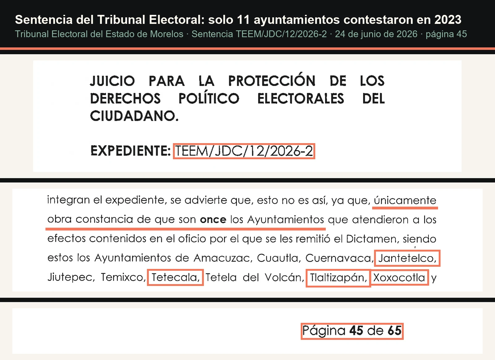
Algunos de esos votos se pueden ver en su forma original. Cuautla aprobó el dictamen el 24 de enero de 2023, en la Vigésimo Quinta Sesión Extraordinaria de su cabildo, con el acuerdo CMC/SM/SE/013-24012023. Cuernavaca lo aprobó el 11 de enero de 2023 con el acuerdo SO/AC-249/11-I-2023, publicado en el Periódico Oficial "Tierra y Libertad" número 6180. Temixco lo hizo el 25 de enero de 2023, en su Vigésimo Sexta Sesión Ordinaria, según la gaceta municipal de ese trimestre.
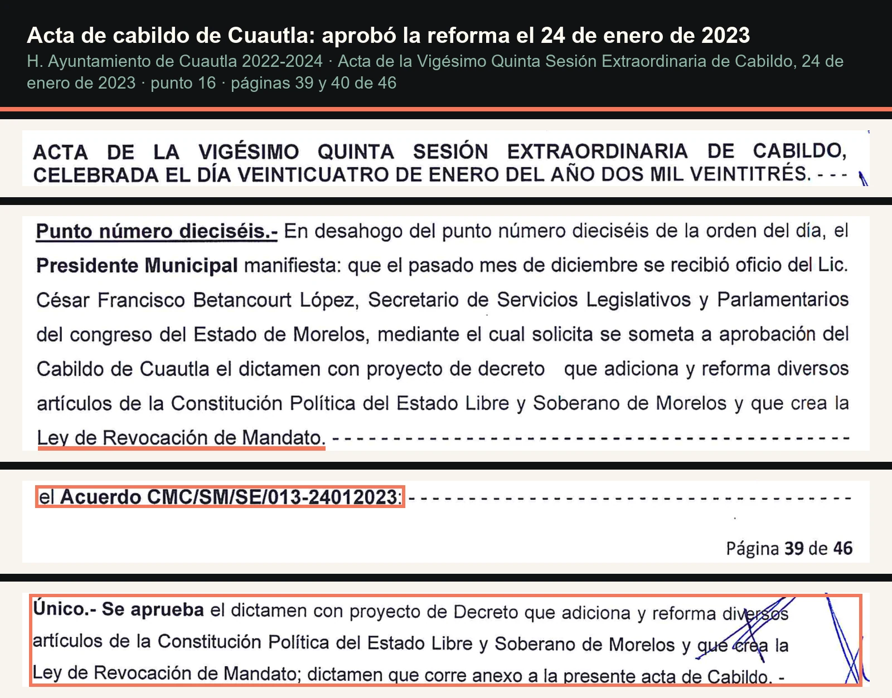
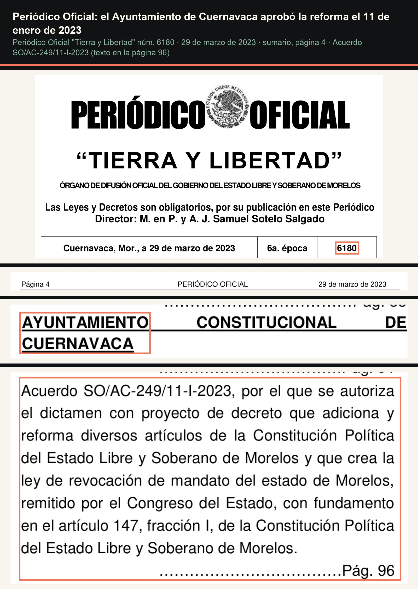
Once votos no alcanzaban. El propio Congreso lo reconoció en marzo de 2025: la agenda legislativa de la LVI Legislatura, publicada en el Periódico Oficial número 6408, describe la revocación de mandato como un mecanismo "que no ha aprobada por los ayuntamientos suficientes para entrar en vigor". El tropiezo de redacción viene en el original.
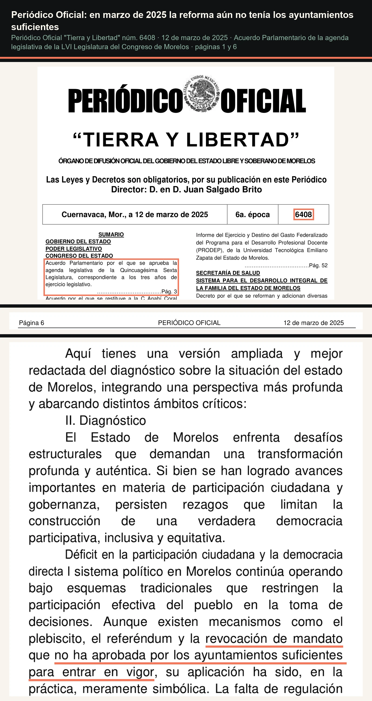
La segunda ronda la provocó un ciudadano. Promovió un juicio por la omisión del Congreso, y el Tribunal le ordenó volver a requerir el voto a los ayuntamientos que no habían contestado. El requerimiento salió el 1 de julio de 2026 con el oficio SSLyP/DPyTL/AÑO2/P.O.2/1014/2026. Para el 28 de agosto, el Congreso informó al Tribunal que ocho ayuntamientos habían enviado copias certificadas de las sesiones de cabildo en las que resolvieron el dictamen: Emiliano Zapata, Hueyapan, Huitzilac, Puente de Ixtla, Tepalcingo, Tlayacapan, Yecapixtla y Ocuituco. Esas copias obran de la foja 516 a la 905 del expediente.
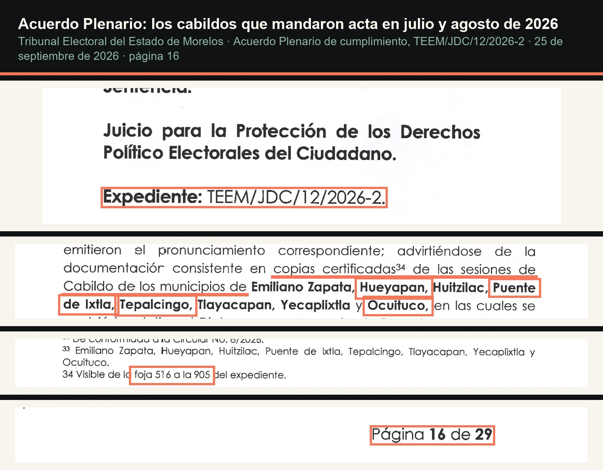
La tercera ronda vino con apercibimiento. El 25 de septiembre, el Tribunal registró que diecisiete ayuntamientos seguían sin pronunciarse, entre ellos Coatetelco y Tlalnepantla, y los vinculó a votar dentro del plazo de cinco días hábiles. Xochitepec, uno de esos diecisiete, aprobó el dictamen el 1 de octubre, según su gaceta municipal de ese mes. El 8 de octubre llegó al Congreso el voto de Tlaquiltenango, el que completó los 24, según la diputada Eleonor Martínez Gómez.
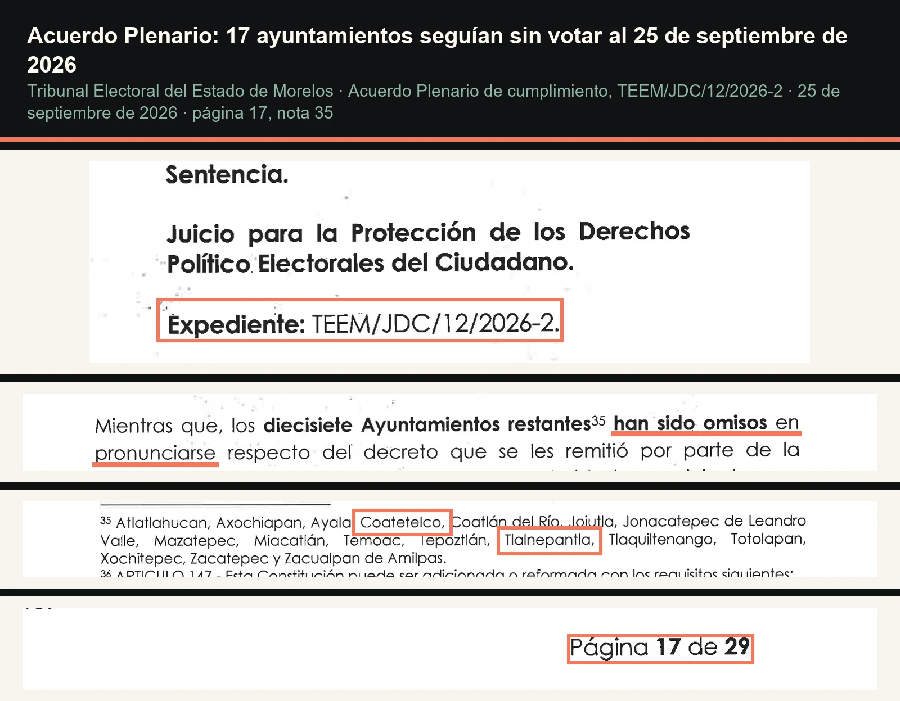
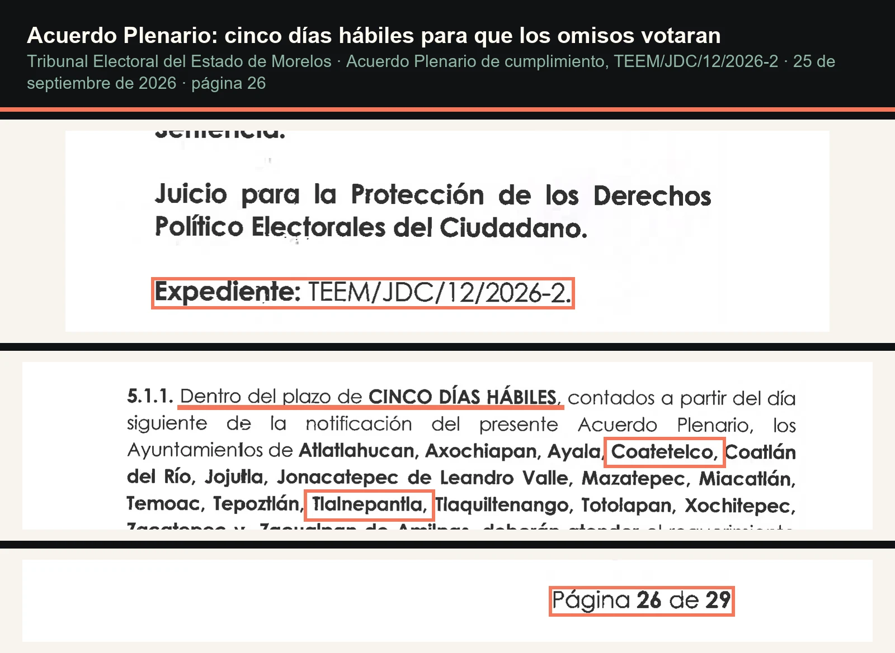
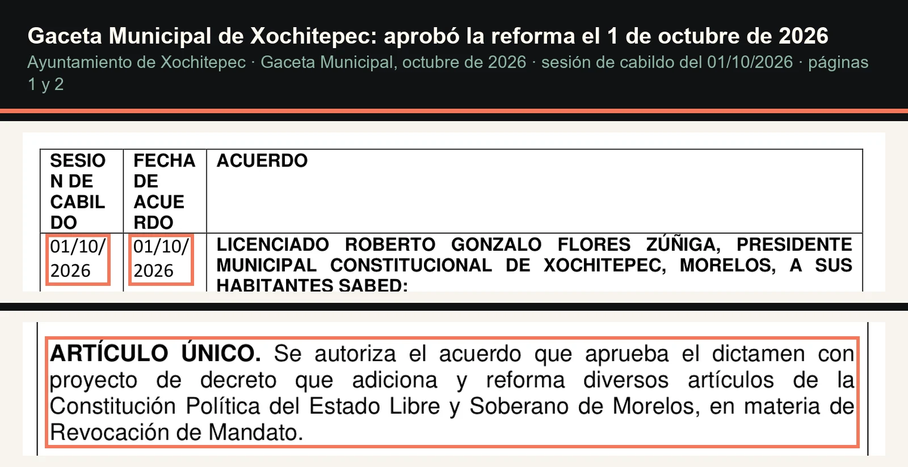
Diez actas en una semana
Según la diputada Martínez Gómez, entre el 9 y el 15 de octubre ingresaron al Congreso 18 actas de cabildo, diez de ellas de municipios que antes habían votado a favor y ahora lo hacían en contra. Los diez son Coatetelco, Hueyapan, Jantetelco, Ocuituco, Puente de Ixtla, Tepalcingo, Tetecala, Tlalnepantla, Tlaltizapán y Xoxocotla, de acuerdo con la conferencia de los diputados de oposición del 4 de noviembre y con la nota de Proceso del 7 de noviembre. Todos ellos aparecen en la lista de "los 24 votos aprobatorios computados por la secretaría" que publicó La Jornada Morelos el 5 de noviembre. Esa lista nombra 23 municipios; el que falta es Cuautla, cuyo voto a favor consta en su acta.
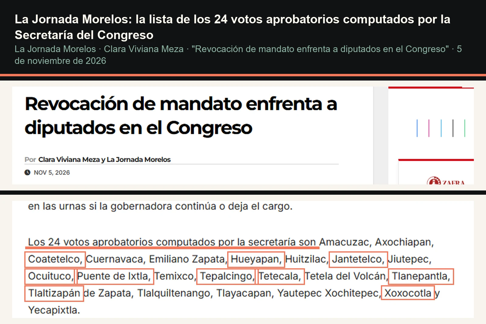
Una cuerda así se puede revisar, y hasta cortar, por la vía que la propia ley prevé. Lo que no tendría que pasar es que se afloje sin que nadie diga quién tiró del nudo.
Las actas de octubre no están publicadas. Tampoco lo está el informe de Servicios Legislativos del 8 de octubre que, según la oposición, contó los 24 votos. Por eso, lo que se sabe de su contenido llega por declaraciones, no por documentos, y así se marca en esta columna.
El mismo cabildo
Cruzar las tres rondas con la lista de los diez separa dos situaciones que en la discusión pública se han mezclado.
En cuatro municipios, Jantetelco, Tetecala, Tlaltizapán y Xoxocotla, el voto a favor lo dio el cabildo de 2022-2024 y la retractación la promueve el de 2025-2027. Ahí cabe el argumento que ha sostenido el coordinador de Morena, Rafael Reyes, en el sentido de que un ayuntamiento nuevo puede tener una opinión distinta mientras no exista la declaratoria. Conviene, eso sí, anotar un dato: en dos de esos cuatro, Tlaltizapán y Tetecala, la planilla que ganó en 2021, y que votó en 2023, fue de Morena o de su coalición, según los resultados oficiales de aquella elección. En 2023 el gobernador era Cuauhtémoc Blanco; desde octubre de 2024 gobierna una mujer de Morena.
En los otros seis no hay cambio de administración que explique el giro. Hueyapan, Puente de Ixtla, Ocuituco y Tepalcingo enviaron su acta en julio y agosto de 2026, ya con los cabildos actuales; aparecen en el cómputo de votos aprobatorios y, semanas después, entre los diez que se echan para atrás. Coatetelco y Tlalnepantla no habían votado al 25 de septiembre, aparecen después en el cómputo a favor y, entre el 9 y el 15 de octubre, en la lista de quienes revierten. En esos seis casos fue la misma administración municipal la que dijo que sí y luego dijo que no, en un lapso de semanas o de días.
La acusación y la respuesta
El 7 de noviembre, Proceso publicó que funcionarios municipales, que pidieron reservar su identidad por temor a represalias, acusan al secretario de Gobierno, Edgar Maldonado Ceballos, de presionar a alcaldes para que cambiaran su voto. Según esos testimonios, a algunos les habría advertido que perderían obras previamente acordadas, a otros les habría ofrecido obras y gestiones, y en algunos municipios habría habido advertencias sobre posibles auditorías de la Entidad Superior de Auditoría y Fiscalización. El presidente estatal del PRI, Eliasib Polanco Saldívar, y la presidenta de Somos Morelos, Marcela Hernández, sostuvieron acusaciones en el mismo sentido.
El secretario respondió por escrito al mismo medio: "Rechazamos cualquier señalamiento en el que se establezca la intervención de este Poder para presionar". El gobierno estatal añadió que respeta la división de poderes y las decisiones de los ayuntamientos, y que apoya la revocación como mecanismo de participación ciudadana. En la misma nota, la diputada de Morena Jazmín Solano reconoció que hubo presiones para modificar decisiones municipales, sin decir de quién.
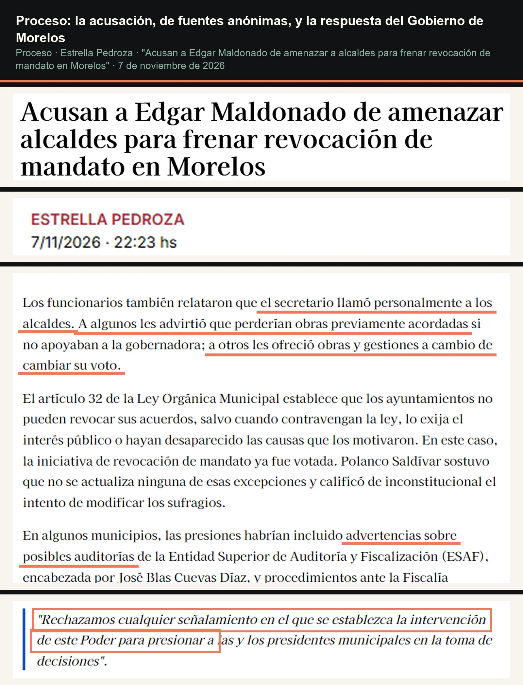
No estoy diciendo que el secretario haya amenazado a nadie. Ningún documento de los que aquí se exhiben lo prueba, y la acusación descansa en fuentes que no dan la cara. Lo que los documentos sí permiten es medir el tamaño de la pregunta.
Lo que exige el artículo 32
La Ley Orgánica Municipal del Estado de Morelos no deja a los cabildos cambiar de opinión libremente. Su artículo 32 dispone que "los Ayuntamientos no podrán revocar sus acuerdos, sino en aquellos casos en que hubieren sido dictados en contravención a la Ley, lo exija el interés público o hayan desaparecido las causas que los motivaron, siguiendo el procedimiento y las formalidades que fueron necesarios para adoptarlos". La oposición en el Congreso, encabezada en este punto por Daniel Martínez Terrazas, sostiene que ninguna de esas tres causas aplica. Morena responde que antes de la declaratoria debe resolverse si los acuerdos posteriores tienen efectos, y propone que lo determine una autoridad judicial.
Conviene leer la regla en el orden en que está escrita. Lo general es que un acuerdo no se revoca; las excepciones son tres y están cerradas. La primera es que el acuerdo original haya violado una ley, la segunda que el interés público exija deshacerlo, la tercera que ya no exista el motivo por el que se tomó. A eso se suma un requisito de forma, porque la revocación tiene que seguir "el procedimiento y las formalidades" del acuerdo original: otra sesión de cabildo, con quórum, votación y acta. Cambiar de parecer, por sí mismo, no aparece en la lista.
La Constitución de Morelos no ayuda a despejar la duda. Su artículo 147 no prevé que un ayuntamiento retire su voto ni fija plazo para hacerlo, mientras el 148 solo encarga al Congreso el cómputo y la declaratoria. Hasta 2018 el mismo artículo contaba como aprobación el silencio de un ayuntamiento que no respondiera en un mes; el decreto 3441 derogó esa fracción. Tampoco la sentencia del Tribunal ni su acuerdo plenario abordan si el voto sobre una reforma constitucional es un acuerdo como cualquier otro o un acto que se agota al llegar al Congreso. Para los cuatro municipios que votaron en 2023 existe un matiz adicional: el artículo 32 habla de "los Ayuntamientos", no de quienes los integran en cada periodo, así que la llegada de una administración nueva no figura entre las tres causas.
Esa discusión no se resuelve en una columna. Lo que sí se puede pedir es que cada una de las diez actas diga, por escrito, cuál de las tres causas invoca. Si alguna cita un oficio, una circular o una indicación de otra autoridad, eso también tendría que constar ahí.
Lo que corta en contra
Una lectura honesta incluye lo que no cuadra con ella. Cuatro de los ocho cabildos que votaron en el verano de 2026 no se retractaron: Emiliano Zapata, gobernado por el Partido Verde, aliado de Morena en el Congreso; Huitzilac y Tlayacapan, de Movimiento Ciudadano; y Yecapixtla, de la coalición PAN-PRI-PRD. Si hubo una instrucción general, no alcanzó a todos los municipios afines al gobierno. Xochitepec, que votó a favor después del apercibimiento del Tribunal, no menciona en su acuerdo comunicación alguna del Ejecutivo.
También hay un argumento de fondo que no conviene despachar. En la sesión del 4 de noviembre, Isaac Pimentel sostuvo en tribuna que Morena está a favor de la revocación de mandato, pero no de que se construya sobre disposiciones desactualizadas: la reforma viene de la legislatura anterior, sus transitorios se escribieron para otro momento y Morelos ya está en proceso electoral. Un cabildo que votó en julio bajo el apremio del Tribunal pudo reconsiderar con ese argumento sobre la mesa; si así fue, el acta tendría que decirlo.
Hay además un hueco que esta columna no cierra. El Tribunal registra cuándo llegaron las actas de julio y agosto, pero no dice en qué sentido votaron; el "a favor" de esos cabildos proviene del cómputo de la Secretaría de Servicios Legislativos que publicó La Jornada Morelos. Y en el caso de Yautepec, que el Tribunal cuenta entre los once de 2023, el oficio reproducido en la sentencia no deja ver la revocación de mandato entre los dictámenes que remite. Las copias certificadas están en el expediente, y son la siguiente parada.
La cuerda de Ulises
Jon Elster usó la escena del canto XII de la Odisea para explicar por qué una sociedad se pone reglas difíciles de cambiar: Ulises pide que lo amarren al mástil porque sabe que, cuando escuche a las sirenas, querrá soltarse. En Ulises desatado (2000), el propio Elster matizó la imagen: las constituciones casi nunca las escribe quien queda amarrado, sino alguien que amarra a otros. La revocación de mandato es una cuerda de ese tipo. La aprobaron diputados de una legislatura anterior y cabildos de otro periodo, para que la ciudadanía pudiera evaluar a quien gobernara después.
Una cuerda así se puede revisar, y hasta cortar, por la vía que la propia ley prevé. Lo que no tendría que pasar es que se afloje sin que nadie diga quién tiró del nudo. Seis cabildos dijeron que sí y, con la misma gente en la mesa, dijeron que no. Las actas ya están en un expediente público. La pregunta, entonces, es la que ningún papel responde todavía: ¿quién los hizo cambiar de opinión?
- Sentencia TEEM/JDC/12/2026-2, completa: 45digitalnoticias.github.io/columnas/dijeron-que-si-doc-teem-sentencia.pdf
- Acuerdo Plenario de cumplimiento TEEM/JDC/12/2026-2, completo: 45digitalnoticias.github.io/columnas/dijeron-que-si-doc-teem-acuerdo-plenario.pdf
- Periódico Oficial 6408, agenda legislativa (extracto): 45digitalnoticias.github.io/columnas/dijeron-que-si-doc-poem-6408.pdf
- Periódico Oficial 6180, acuerdo de Cuernavaca (extracto): 45digitalnoticias.github.io/columnas/dijeron-que-si-doc-poem-6180.pdf
- Acta de cabildo de Cuautla del 24 de enero de 2023 (extracto): 45digitalnoticias.github.io/columnas/dijeron-que-si-doc-cuautla-acta-2023-01-24.pdf
- Gaceta de Temixco, enero-marzo de 2023 (extracto): 45digitalnoticias.github.io/columnas/dijeron-que-si-doc-temixco-gaceta-2023-t1.pdf
- Gaceta de Xochitepec, octubre de 2026 (extracto): 45digitalnoticias.github.io/columnas/dijeron-que-si-doc-xochitepec-gaceta-2026-10.pdf
- Tribunal Electoral del Estado de Morelos, sentencia del juicio ciudadano TEEM/JDC/12/2026-2 (24 de junio de 2026), pp. 40-49, y Acuerdo Plenario de cumplimiento del mismo expediente (25 de septiembre de 2026), pp. 11-28: teem.gob.mx/resoluciones/2026/Resoluciones-2026.html
- Constitución Política del Estado Libre y Soberano de Morelos, arts. 147 fr. I y 148 (vigente, con reforma del 27 de enero de 2026): marcojuridico.morelos.gob.mx
- Ley Orgánica Municipal del Estado de Morelos, art. 32, segundo párrafo (texto vigente, última reforma publicada el 7 de octubre de 2026; cotejado contra el PDF oficial el 8 de noviembre de 2026): marcojuridico.morelos.gob.mx/documentos/2846/download
- Intervención del diputado Isaac Pimentel Mejía en tribuna, sesión del 4 de noviembre de 2026 (video de Cuautlahoy): youtube.com/watch?v=xicpGAXWQL0
- Congreso del Estado de Morelos, "Debaten legisladores sobre validez de los votos de Ayuntamientos para una reforma constitucional", boletín del 4 de noviembre de 2026: congresomorelos.gob.mx/2026/11/04/debaten-legisladores-sobre-validez-de-los-votos-de-ayuntamientos-para-una-reforma-constitucional
- Periódico Oficial "Tierra y Libertad" 6180 (29 de marzo de 2023), Acuerdo SO/AC-249/11-I-2023 del Ayuntamiento de Cuernavaca: periodico.morelos.gob.mx/obtenerPDF/2023/6180.pdf
- Periódico Oficial "Tierra y Libertad" 6408 (12 de marzo de 2025), Acuerdo Parlamentario de la agenda legislativa de la LVI Legislatura: periodico.morelos.gob.mx/obtenerPDF/2025/6408.pdf
- Ayuntamiento de Cuautla 2022-2024, acta de la Vigésimo Quinta Sesión Extraordinaria de Cabildo, 24 de enero de 2023 (sitio de la administración 2022-2024, copia en el archivo de la casa).
- Ayuntamiento de Temixco, gaceta "Acuerdos aprobados por la administración 2022-2024, primer informe trimestral enero-marzo 2023", p. 9: temixco.gob.mx/wp-content/uploads/2023/06/GACETA-ENERO-MARZO-2023.pdf
- Ayuntamiento de Xochitepec, Gaceta Municipal de octubre de 2026: xochitepec.gob.mx/_files/ugd/8d7c6d_9fa99f4216624b13801c2a24af6d4f70.pdf
- La Jornada Morelos, "Revocación de mandato enfrenta a diputados en el Congreso", 5 de noviembre de 2026: lajornadamorelos.mx/congreso/revocacion-de-mandato-enfrenta-a-diputados-en-el-congreso
- La Jornada, "Morelos: frena Morena declaratoria de revocación de mandato", 5 de noviembre de 2026: jornada.com.mx/2026/11/05/estados/028n2est
- Gobierno del Estado de Morelos, Secretaría de Gobierno, ficha y retrato oficial del titular, Edgar Antonio Maldonado Ceballos (consultado el 8 de noviembre de 2026): morelos.gob.mx/secretaria-de-gobierno
- Estrella Pedroza, "Acusan a Edgar Maldonado de amenazar a alcaldes para frenar revocación de mandato en Morelos", Proceso, 7 de noviembre de 2026: proceso.com.mx/nacional/estados/2026/11/7/acusan-a-edgar-maldonado-de-amenazar-a-alcaldes-para-frenar-revocacion-de-mandato-en-morelos-383316.html
- Instituto Nacional Electoral, resultados de las elecciones de ayuntamientos de Morelos 2021 y 2024 (Sistema de Consulta de la Estadística de las Elecciones): siceen21.ine.mx
- Jon Elster, Ulysses and the Sirens: Studies in Rationality and Irrationality, Cambridge University Press, 1979, ISBN 978-0521269841.
- Jon Elster, Ulysses Unbound: Studies in Rationality, Precommitment, and Constraints, Cambridge University Press, 2000 (prefacio y capítulo "Ulysses unbound: constitutions as constraints"): cambridge.org/core/books/ulysses-unbound/ulysses-unbound-constitutions-as-constraints/24BCFC08B5D11877890729B539BCAEB1
Las ligas van a la vista para que cualquiera compruebe por su cuenta. Si alguna dejó de resolver, escríbenos y la reponemos.
SRVO